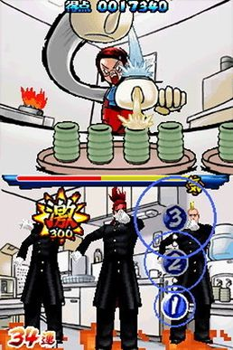

A note about the usage of Osu!
Osu! itself is a copyrighted game, but its code is open-source (MIT licensed). If you are making an Osu! game, about the only thing you can’t do, is use the Osu! trademark, logo (and other related graphic resources), and its likeness for the name and look of your own game, but the mechanics and the game design of the rhythm game itself can be used (much in the same manner that there are lots of Guitar Hero/Rock Band style rhythm games out there).
Warning
MouseDance is not meant to be a 1:1 copy of Osu! (there is no account system, no ranking or leaderboard functionality or any online service, nor does it really ever intend to have any). It is meant more to add Osu! style rhythm game mechanics into your Unity game.
Here is a quote from the author of Osu! back in 2016 (link to full post):
Do you personally condone osu! clones?
Let me clarify that it depends on what you mean by a clone. If you’re going to use the osu! code and make a new game called “gosu!” then no. This will infringe our trademark and also be an ass move.
If you want to make a music game with similar gameplay rules to osu!, then by all means go ahead! I “borrowed” the rules for each game mode from already existing games and to be honest I don’t believe there should ever be copyright/patent placed on any kind of basic gameplay elements. F--- that noise.
In short, if you want to make your own game, make your own game from scratch. I guarantee it will be a more satisfying experience for everybody!
None of the original Osu! source code is actually used in the MouseDance source code, despite the fact that it’s also written in C#. Osu! was written to work in the .NET SDK alone. It would have been a lot more work retrofitting that code into Unity, compared to just coding the Osu! rhythm game mechanics from scratch in Unity already in the first place.
A little history
Osu! itself is based on the Nintendo DS game, Osu! Tatakae! Ouendan ("Go! Fight! Cheer Squad") made in 2005 by iNiS Corporation.
People in the western market might be more familiar with the game Elite Beat Agents, made in 2006 by the same developers.
Both of these Nintendo DS games, as well as Osu!, have very similar rhythm game mechanics.